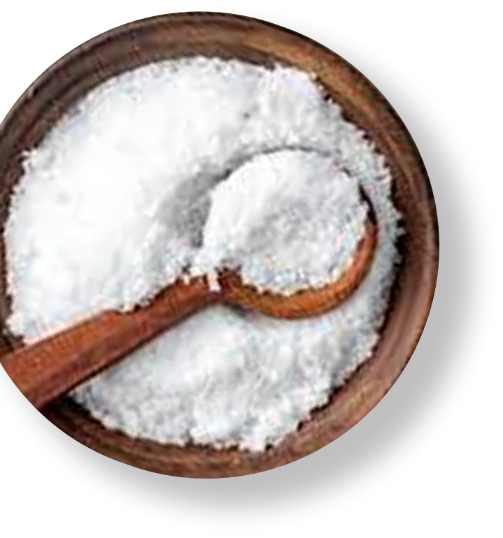
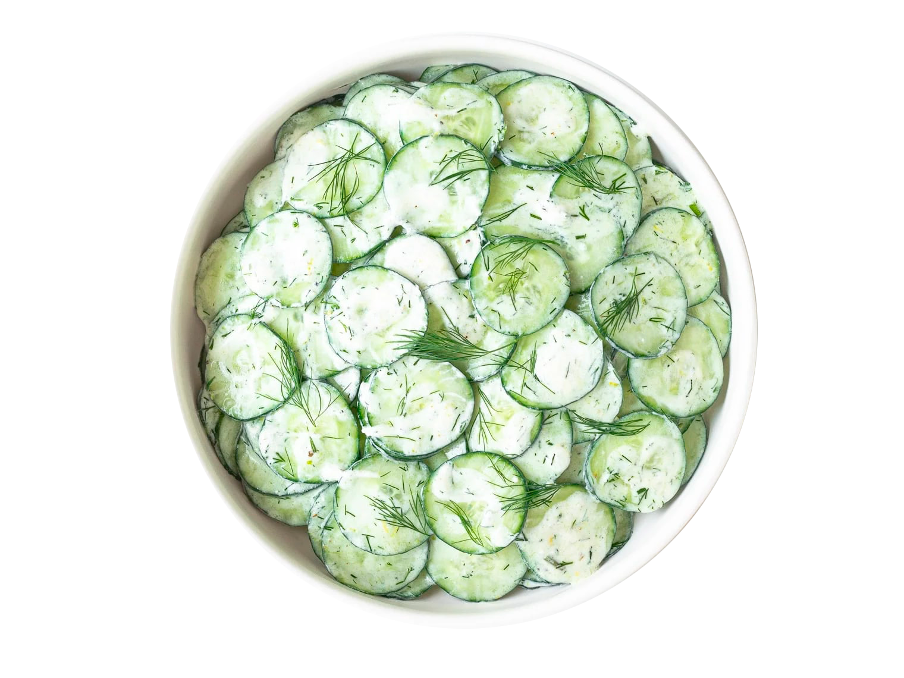

Clássica
O padrão ouro da crocância. Fatias finas e douradas que celebram a pureza da batata, finalizadas com um toque de sal que realça o sabor autêntico e o estalo perfeito a cada mordida.



Vinagre & Sal
Uma explosão sensorial ousada e eletrizante. O contraste entre a acidez cortante do vinagre e o realce do sal cria um perfil de sabor vibrante que desafia e conquista o paladar instantaneamente.


Sour Cream
Uma carícia suave para as papilas gustativas. A união delicada entre o frescor das ervas finas e a cremosidade aveludada do sour cream resulta em um snack equilibrado, leve e profundamente viciante.

Premium Taste
Uma experiência sofisticada que une a crocância da batata ao sabor rico e defumado de um assado nobre, elevando o snack ao nível gourmet.